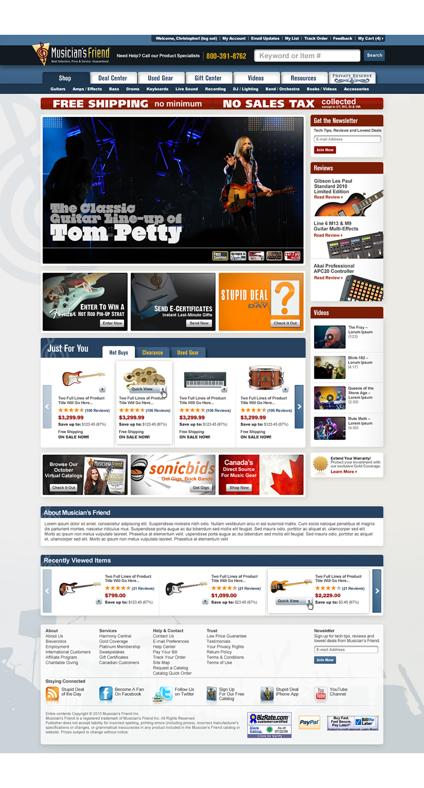
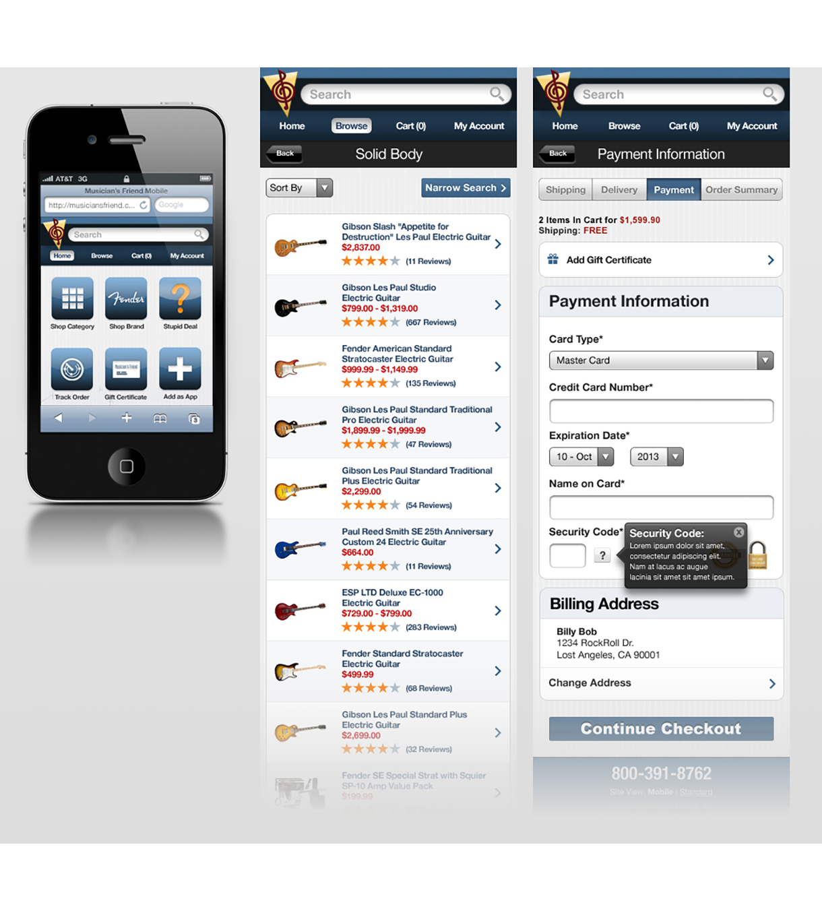

chriseddie.com / Musician's Friend
chriseddie.com / Musician's Friend
I received my introduction to User Experience design in 2008 at Musician’s Friend (Guitar Center) — the world’s largest direct marketer of musical instruments. I assisted in a complete redesign of the company's main ecommerce website and supported it’s development.

Musician's Friend website redesign.
I also received my introduction into mobile (before the responsive design movement) as the lead designer on the Musician’s Friend mobile website.

Mobile website design.
Date: 2008 - 2011
Company: Musician's Friend
Role: UX Designer